Hands-on Start Guide
From idea to a working NFC-controlled actuation prototype with Renesas 365
This hands-on lab takes you from an idea to a working prototype in which an NFC card controls a servo motor, using Renesas 365, the industry’s first intelligent, platform-based development environment. You will load a complete, ready-to-evaluate solution from the Xplore Hub, review the system design, build the software in the browser, then flash, debug and run it on real hardware.
The solution combines an RA2E3 MCU, the PTX105R NFC reader from Renesas and an SG90 servo motor. The application reads an NFC card, validates the credential locally on the RA2E3, and moves the servo to show a clear physical response: a full sweep for a valid card, and a small movement for an invalid card.
The boards used in this lab are available from the Renesas website: FPB-RA2E3 Fast Prototyping Board and PTX105R Quick-Connect Pmod Board. The SG90 servo motor is a standard micro servo available from common electronics distributors.
Hardware components:
FPB-RA2E3 Fast Prototyping Board (RA2E3 MCU host with on-board J-Link debugger)
PTX105R Quick-Connect Pmod Board (PTX105R NFC reader)
SG90 servo motor with jumper wires
NFC card
USB cable
The role of each board is summarised in Table 1.
Table 1. Boards and Devices Used
| Function | Board / Device | Role |
|---|---|---|
| Application host | FPB-RA2E3 Fast Prototyping Board | Runs the FreeRTOS application, validates the NFC credential, and generates the servo PWM control signal. |
| NFC interface | PTX105R Quick-Connect Pmod Board | Detects and reads supported NFC cards through the reader software stack. |
| Mechanical output | SG90 servo motor | Moves to the position or sweep selected by the application credential logic. |
A PC with a Chrome or Edge web browser and internet access
A MyRenesas account to sign in to Renesas 365
A serial terminal program on your PC (for example Tera Term), optional for viewing the application log
Renesas 365 is an intelligent, platform-based development environment that connects system design, hardware, and software in one workspace. Everything in the workspace is contextually modeled by the platform, so it understands your design and provides the right information at the point of need.
All Xplore assets are delivered through Renesas 365. The Xplore Hub is your starting point to find complete solutions, reference applications and software building blocks, filtered by application or board.
The following list highlights the platform capabilities used in this lab.
Contextual intelligence: the platform understands your design
Connected domains: system design (ESD), hardware and software, logically linked
Unified workflow: one environment, from idea to working prototype
Software building blocks: built, tested and validated by Renesas
Web IDE: edit, compile, debug, download and run from the browser, with nothing to install
Collaborative workspace: share, be shared with, and get notified when things change
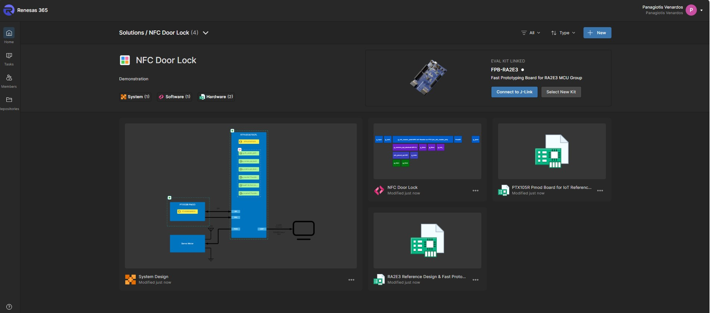
Figure 1. Renesas 365 solution workspace: system design, hardware and software, linked
This section provides a step-by-step procedure to load, build, run and debug the solution project using Renesas 365.
The Servo motor enabled by NFC solution project provides a complete reference implementation for locally controlled access and actuation. An FPB-RA2E3 board acts as the application host. The PTX105R Quick-Connect Pmod board connects to the RA2E3 over SPI with an interrupt line, and the SG90 servo motor is driven by a PWM output generated by the RA2E3 General PWM Timer (GPT). Application messages are sent to the PC over the J-Link virtual COM port (230400 baud, 8N1).
The application works in five steps:
Detect the NFC card: the PTX105R continuously waits for a supported NFC card and reports it to the RA2E3 application.
Read the credential: the NFC reader software identifies the card and provides its UID and available NDEF information.
Validate locally: the RA2E3 compares the presented credential with the configured valid-credential logic, with no cloud connection required.
Select the movement: a valid card triggers a sweep from 0 to 180 degrees, a pause and a return sweep. An invalid card triggers a 10-degree movement before the servo returns to 0 degrees.
Generate the PWM output: the servo building block converts the requested angle into the timer duty cycle of a 50 Hz PWM signal.
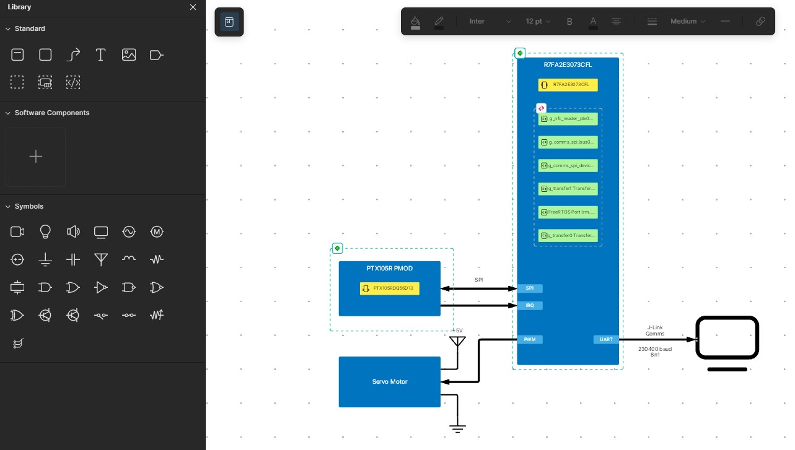
Figure 2. Servo motor enabled by NFC - System block diagram
The software is assembled from the reusable building blocks listed in Table 2.
Table 2. Software Components
| Software Building Block | Purpose |
|---|---|
| NFC Card Reader | Discovers and activates supported NFC cards, reads card identity and supported NDEF data, and delivers results through application callbacks. |
| PTX105R Adapter and FSP Integration | Connects the NFC workflow to the PTX105R SDK, SPI interface, interrupt, timers and platform drivers. |
| Credential Validation Logic | Evaluates the detected card credential locally and selects the valid-card or invalid-card movement response. |
| PWM Servo Motor Control | Generates the servo PWM output and provides reusable functions for opening, positioning (by angle or percentage), sweeping and closing the servo instance. |
| Application Movement Sequence | Implements the valid-card 0-to-180-degree sweep and the invalid-card 10-degree indication before returning to the initial position. |
| FreeRTOS Application Framework | Supports the NFC workflow and the integration of multiple functional blocks within the application. |
Materials:
FPB-RA2E3 & USB debug/power cable
SG90 servo motor
PTX105R NFC reader board
Three male-to-male jumper wires, 3 inches or longer
One or more NFC cards or tags
Steps:
Plug the PTX105R Quick-Connect Pmod board into the PMOD1 connector of the FPB-RA2E3.
Connect the SG90 servo motor to the FPB-RA2E3 as shown in the system design: signal wire to the PWM output, power wire to +5 V, and ground wire to GND.
| Servo Wire Function | FPB-RA2E3 Connection | MCU Configuration |
|---|---|---|
| 5V Power (Red) | J2, pin 5 | 5V |
| Ground (Brown) | J2, pin 6 | GND |
| PWM Control (Yellow) | PMOD2, pin 10 | P301 / GTIO7B |
Connect the FPB-RA2E3 to your PC with the USB cable. The on-board J-Link is used for flashing, debugging and the virtual COM port; no external probe is required.
Note: Check the servo wiring before powering the board. A reversed power connection can damage the servo.
Open the Xplore Hub in your browser: https://renesas.com/Renesas365/Xplore
Open the Solution hub and filter by application or board, or search by functionality.
Select the Servo motor enabled by NFC solution and click Experience now.
Sign in with your MyRenesas credentials if prompted. Renesas 365 opens with the full working solution in your workspace.
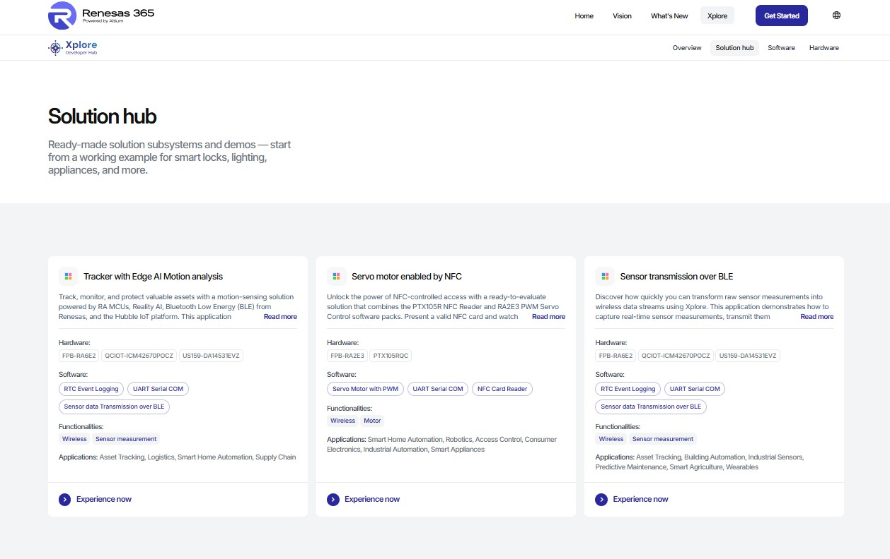
Figure 3. Xplore Hub: select Servo motor enabled by NFC, then click Experience now
Note: This is not a single software building block: it is a complete solution, to experiment with or to base your product on.
From the Renesas 365 home page, open the solution. The workspace shows the linked evaluation kit (FPB-RA2E3) and three linked domains:
System (ESD, Electronic System Design): the system design.
Hardware: the FPB-RA2E3 and PTX105R Pmod board reference designs.
Software: the software project, opened in the web IDE.
Note that the workspace is collaborative: you can share it and get notified when things change.
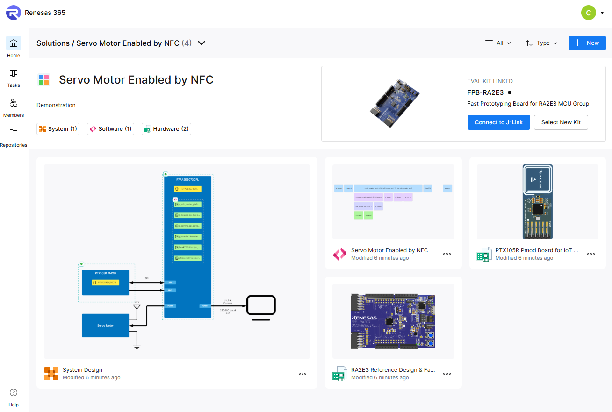
Figure 4. Renesas 365: open the solution from your workspace
Open the System Design view (see Figure 5). The system is sketched in blocks: the RA2E3 MCU with its software building blocks, the PTX105R Pmod connected over SPI and IRQ, the servo motor connected to the PWM output and supplied with +5 V, and the PC connected over UART through the J-Link. Each block has hardware and software “blankets” (the logical representation of the hardware and software).
Click on the MCU blue square to consult the documentation.
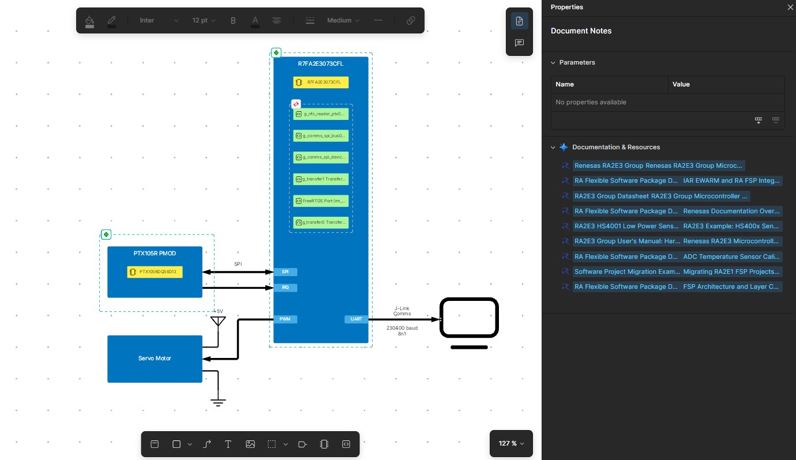
Figure 5. ESD: MCU with the related documentation listed on the right-hand side
Click on the green icon (hardware blanket) to open the hardware project.
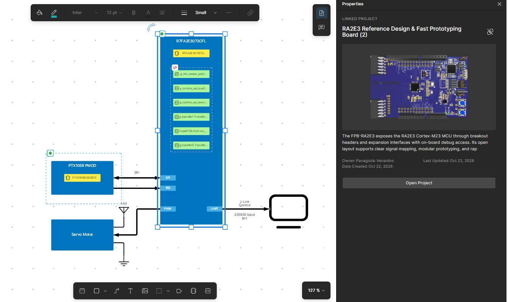
Figure 6. ESD: Click on the hardware blanket (green icon on the upper left of the MCU) to open the hardware project
This gives access to the related hardware resources: schematics, layout and Bill of Materials.
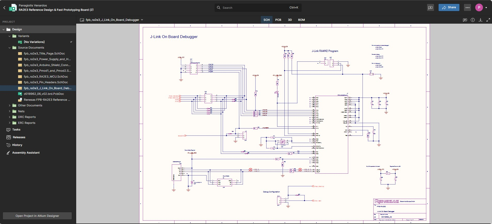
Figure 7. Hardware reference design (schematic) available from the workspace
Back in the ESD, click on the SW blanket (pink icon on the upper left of the software components).
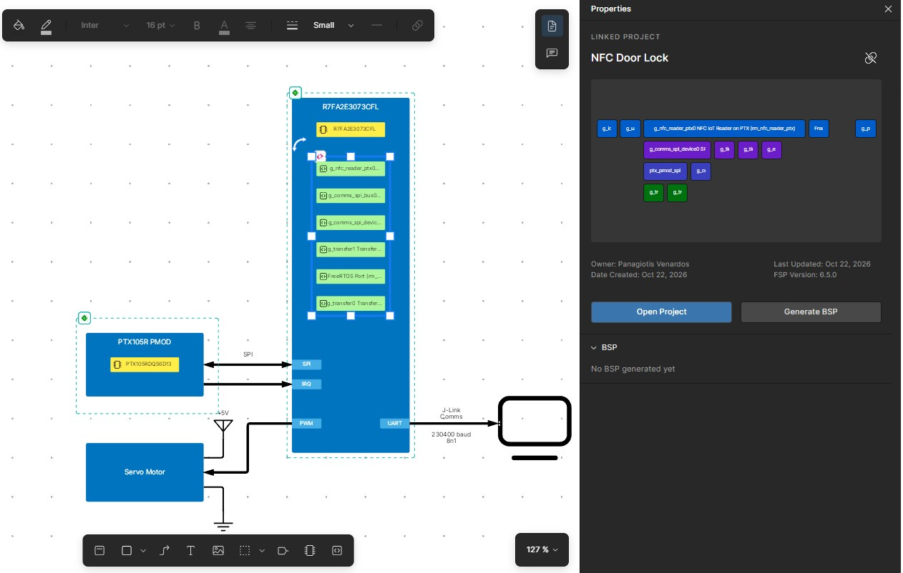
Figure 8. ESD: Click on the pink icon of the software blanket to open the software project
Click Open Project to open the web IDE and access the software project directly in the browser: no download, no installation, no toolchain setup needed. The src folder contains the application and the software building blocks: rs-nfc-card-reader, rs_servo_motor and rs-console-io.
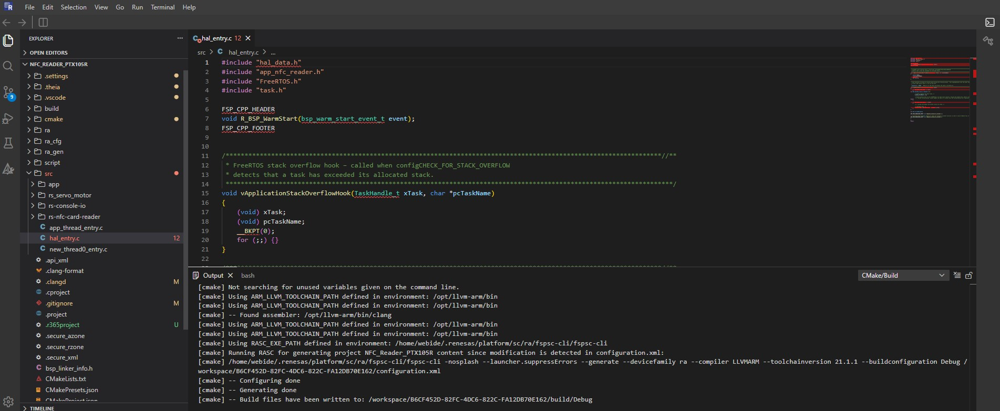
Figure 9. Web IDE: edit, compile, debug, download and run from the browser
Click Build in the bottom bar of the web IDE. The environment is already configured; the compiler and linker run on Renesas servers.
Check the build output in the terminal. A successful build ends with Build finished with exit code 0.
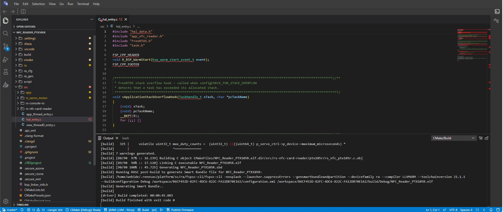
Figure 10. Build output in the web IDE
Open Debug from the left bar of the web IDE and select the Renesas WebUSB J-Link GDB configuration. Renesas 365 connects to your local hardware and finds the J-Link on the FPB-RA2E3: there is no traditional debug setup.
Start the debug session. The application is flashed and execution stops at main.
Step through the code, then Run.
Pause and inspect the threads, call stack and variables.
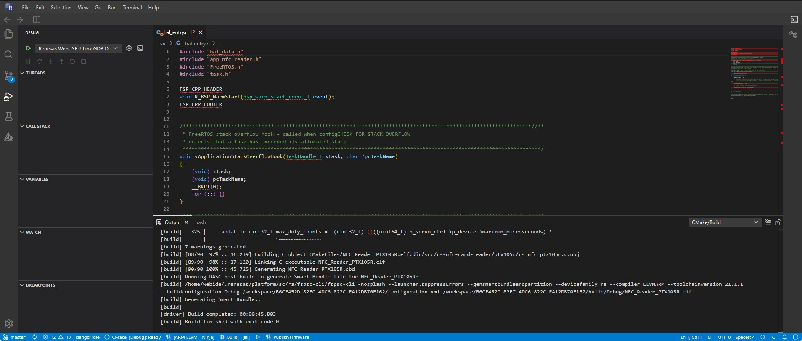
Figure 11. Debug session started from the web IDE
At this stage the board is flashed with the firmware, and the application runs whenever the board is powered or connected to your PC.
Optionally, open your serial terminal on the J-Link COM port with 230400 baud, 8N1 to view the application log.
Present a valid NFC card to the PTX105R antenna. The servo sweeps from 0 to 180 degrees, pauses, and sweeps back to 0 degrees.
Present an invalid NFC card. The servo makes a small 10-degree movement and returns to 0 degrees.
Note: This reference project demonstrates local credential-controlled actuation for evaluation and proof-of-concept use. A production access-control system requires application-specific security, credential provisioning, threat analysis, mechanical safety and product validation.
By following this guide, you have gone from concept to a working prototype: system design, hardware selection, reusable software, then build, debug and a running device.
Use the time saved to explore “what if”. As a first exercise, change the successful-read servo sweep from 0–180 degrees to 0–90 degrees, then rebuild and run. You can also adapt the locked and unlocked positions, the movement profile or the credential logic for your target product. Suggested next steps:
Visit the Xplore Hub and find the solutions that matter to you.
Register for Renesas 365 and experiment with the platform.
Explore reference applications: load one, build it, run it.
Become an early adopter: talk to the Renesas team and help shape the future of the platform.
This NFC-to-servo pattern can be reused across many compact, cost-sensitive access and actuation designs, including:
Table 3. Example Applications
| Segment | Example applications |
|---|---|
| Smart storage | Smart cabinets, electronic lockers, storage compartments |
| Equipment access | Equipment enclosures, tool or asset compartments, service-access panels |
| Appliances and consumer systems | Appliance access panels, NFC-enabled compartments, user-selectable mechanical controls |
| Building and room access | Proof-of-concept door-lock systems, small access barriers, credential-triggered latches |
| Industrial | Machine-panel access concepts, local operator authorization, NFC-triggered positioning mechanisms |
| Symptom | Check |
|---|---|
| Board not found when starting Debug | USB cable connected to the FPB-RA2E3; board powered. |
| MCU board detected in Renesas 365 but Debug fails with “gdbserver exit 0” | The J-Link firmware on the MCU board needs to be updated. The simplest way is to download and install J-Link WinUSB Switcher Lite and configure the board in WinUSB mode as described in this guide. |
| No reaction when a card is presented | PTX105R Pmod board fully seated in PMOD1; card held flat and close to the antenna; card type supported by the reader. |
| Card detected but servo does not move | Servo signal wire on the PWM output; servo power on +5 V and ground on GND. |
| No output in the terminal | Correct J-Link COM port selected; settings 230400 baud, 8N1. |
Technical Updates/Technical News
The latest information can be downloaded from the Renesas Electronics website.
Website and Support
Renesas Electronics Website – https://www.renesas.com/
Inquiries – https://www.renesas.com/contact/
| Revision | Date | Description |
|---|---|---|
| 1.00 | Nov 2, 2026 | Initial release. |